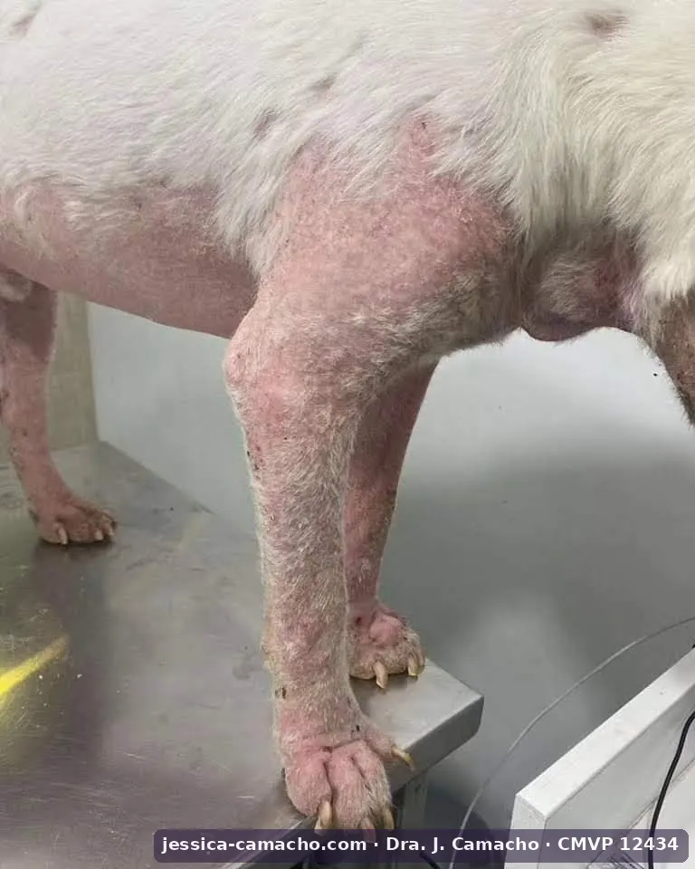
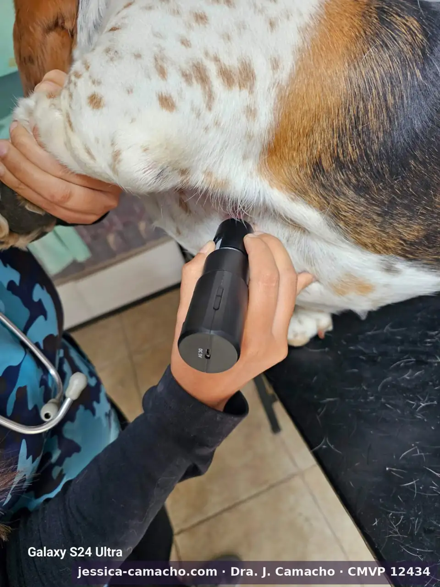
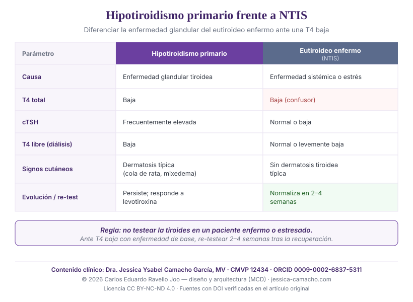

Hipotiroidismo canino y dermatología: signos cutáneos, el confusor del eutiroideo enfermo (NTIS) y el diagnóstico diferencial
Resumen
Antecedentes. El hipotiroidismo es la endocrinopatía que con mayor frecuencia se expresa en la piel del perro. Sin embargo, su sobrediagnóstico es común: la enfermedad sistémica y el estrés reducen la tiroxina (T4) sin que exista enfermedad tiroidea primaria, un fenómeno conocido como síndrome del eutiroideo enfermo (NTIS).45
Objetivo. Sintetizar las manifestaciones dermatológicas del hipotiroidismo canino y su mecanismo, describir el NTIS como confusor diagnóstico, y proponer una guía práctica de diagnóstico diferencial entre el hipotiroidismo primario y el eutiroideo enfermo.
Puntos clave. La dermatosis hipotiroidea cursa con alopecia bilateral simétrica no pruriginosa de distribución troncal (la «cola de rata»), pelo seco y opaco, hiperqueratosis, hiperpigmentación, mixedema («facies trágica») y predisposición a infecciones secundarias —pioderma, demodicosis—.16 El NTIS reduce la T4 total y libre de forma reversible; en perros agudamente enfermos la T4 total estaba baja en el 100 % al ingreso y se normalizó en dos a cuatro semanas tras la recuperación.4 La diferenciación se apoya en la clínica, la cTSH, la T4 libre por diálisis de equilibrio y el re-test tras la resolución de la enfermedad de base.23
Conclusión. Ante una T4 baja, y antes de prescribir levotiroxina de por vida, es obligatorio descartar el NTIS. El diagnóstico de hipotiroidismo es clínico y multiparamétrico, no se basa en una sola hormona.
Palabras clave: hipotiroidismo canino; síndrome del eutiroideo enfermo; NTIS; hormona tiroidea; dermatosis endocrina; alopecia troncal; cola de rata; mixedema; T4 baja; diagnóstico diferencial; sobrediagnóstico.
1. Introducción: tiroides y piel
Punto de partida El hipotiroidismo es una causa frecuente de dermatosis endocrina en el perro, pero también una de las más sobrediagnosticadas, porque la T4 baja no es sinónimo de enfermedad tiroidea: el estrés y cualquier enfermedad sistémica pueden reducirla sin que la glándula esté comprometida.4
La hormona tiroidea es un regulador esencial de la piel y el pelo. Su deficiencia produce un cuadro dermatológico reconocible y, con frecuencia, es la dermatosis la que motiva la consulta antes que los signos sistémicos. El problema clínico no es solo reconocer ese cuadro, sino evitar el error inverso: diagnosticar hipotiroidismo en un perro que simplemente tiene la T4 baja por otra causa.
Esta revisión describe las manifestaciones cutáneas del hipotiroidismo y su mecanismo, sitúa al síndrome del eutiroideo enfermo (NTIS) como el principal confusor, y ofrece una guía para diferenciar el hipotiroidismo primario del NTIS —una distinción que define si un animal recibirá tratamiento de por vida o no.
2. Manifestaciones dermatológicas del hipotiroidismo
Cuadro cutáneo La dermatosis hipotiroidea es una alopecia bilateral simétrica no pruriginosa de distribución troncal —incluida la «cola de rata»—, con pelo seco y quebradizo, hiperqueratosis, hiperpigmentación, mixedema y predisposición a infecciones cutáneas secundarias.1
La hormona tiroidea regula la iniciación del ciclo folicular, la diferenciación epidérmica y la función sebácea; su deficiencia experimental en el perro reproduce las alteraciones cutáneas características.1 Clínicamente, el cuadro incluye:
- Alopecia bilateral simétrica no pruriginosa, de distribución troncal y en zonas de fricción; la alopecia de la cola produce el aspecto en «cola de rata».1
- Pelo seco, opaco y quebradizo, con escaso recrecimiento tras el rasurado.
- Hiperqueratosis e hiperpigmentación, con seborrea seca o grasa.
- Mixedema: engrosamiento cutáneo por acumulación dérmica de glucosaminoglucanos (mucinosis), documentada histoquímicamente en perros hipotiroideos, que en la cara genera la expresión «trágica».7
- Infecciones secundarias —pioderma, demodicosis— favorecidas por la alteración de la barrera y de la inmunidad cutánea; en una serie de 157 perros con pioderma recurrente, el hipotiroidismo fue una de las enfermedades subyacentes más frecuentes.68
La demodicosis de inicio adulto merece mención aparte: en una serie de 122 perros se asoció de forma significativa tanto al hipotiroidismo como al hiperadrenocorticismo, de modo que su aparición obliga a investigar ambas endocrinopatías.6

3. El confusor: síndrome del eutiroideo enfermo (NTIS)
Advertencia diagnóstica El síndrome del eutiroideo enfermo reduce la T4 total y libre en perros sin enfermedad tiroidea, como respuesta a una enfermedad sistémica o al estrés. Es reversible: en perros agudamente enfermos, la T4 total estaba baja en el 100 % al ingreso y se normalizó sola en dos a cuatro semanas tras la recuperación.4
El NTIS es la principal razón por la que el hipotiroidismo se sobrediagnostica. Cualquier enfermedad no tiroidea —incluidas las dermatopatías crónicas graves, las infecciones cutáneas profundas o el propio hiperadrenocorticismo— puede deprimir las concentraciones de hormona tiroidea sin que la glándula esté enferma.5 La magnitud del descenso tiende a correlacionarse con la gravedad de la enfermedad de base.5
La consecuencia práctica es directa: medir la función tiroidea en pleno cuadro de enfermedad o estrés, e interpretar el resultado de forma aislada, conduce a diagnosticar un hipotiroidismo que no existe. El dato cuantitativo es contundente: la normalización espontánea de la T4 en dos a cuatro semanas tras la recuperación demuestra que la glándula nunca estuvo enferma.4 Un estudio prospectivo reciente añade una advertencia sobre la fase de recuperación: la TSH puede elevarse de forma transitoria sin que exista hipotiroidismo verdadero, y no se observó ningún perro con T4 total baja y TSH alta de forma simultánea durante el proceso.10
4. Bases del diagnóstico diferencial
Concepto clave Diferenciar el hipotiroidismo primario del NTIS exige un abordaje multiparamétrico: ninguna hormona aislada lo resuelve. La combinación de cuadro clínico, cTSH, T4 libre por diálisis de equilibrio y, cuando persiste la duda, el re-test tras la recuperación, es lo que distingue una enfermedad glandular de una alteración funcional reversible.23
En el hipotiroidismo primario, el eje hipófiso-tiroideo responde al descenso de hormona tiroidea elevando la tirotropina (cTSH); el estudio de la función adenohipofisaria muestra patrones distintos en el hipotiroidismo primario respecto a la enfermedad no tiroidea.2 Por ello, una cTSH elevada acompañando a una T4 libre baja apoya el hipotiroidismo primario, mientras que una cTSH normal o baja con T4 total baja orienta hacia NTIS.
Dos matices importantes para no sobreinterpretar: la cTSH no es perfectamente sensible —una proporción de perros con hipotiroidismo primario mantiene la cTSH dentro del rango de referencia—9, y la T4 libre, idealmente medida por diálisis de equilibrio, resiste mejor el efecto del NTIS que la inmunoanálisis análoga, pero puede descender también en la enfermedad no tiroidea grave.11 La evaluación de los perros con T4 plasmática baja confirma que la distinción requiere integrar varios parámetros, no fiarse de uno.3
5. Guía práctica: hipotiroidismo primario frente a NTIS
Aplicación clínica Ante un perro con T4 baja, la decisión clave es si tratar o no de por vida. La concordancia entre una dermatosis hipotiroidea establecida, una cTSH elevada y una T4 libre baja apoya el hipotiroidismo primario; la T4 baja en un paciente enfermo o estresado, sin el cuadro dermatológico típico y con cTSH normal, orienta hacia NTIS y obliga a re-testear tras la recuperación.
5.1. Qué evaluar en el paciente con T4 baja
- Cuadro dermatológico: ¿hay una dermatosis hipotiroidea establecida (alopecia troncal en «cola de rata», mixedema, hiperqueratosis, pelo opaco) o la piel está respetada?1
- Estado sistémico: ¿existe una enfermedad concurrente o un estrés que justifique un NTIS? Si la hay, la T4 baja es sospechosa de confusor.5
- Perfil hormonal: no medir solo T4 total. Combinar T4 total, cTSH y T4 libre (idealmente por diálisis de equilibrio).3
- Momento de la medición: evitar testear en plena enfermedad aguda o estrés; si la T4 baja aparece en ese contexto, reservar la decisión.4

5.2. Diferencias orientadoras
| Parámetro | Hipotiroidismo primario | Eutiroideo enfermo (NTIS) |
|---|---|---|
| Causa | Deficiencia tiroidea primaria (enfermedad glandular). | Enfermedad sistémica o estrés; glándula sana. |
| T4 total | Baja. | Baja (confusor). |
| cTSH | Frecuentemente elevada (puede ser normal en parte de los casos).2 | Normal o baja. |
| T4 libre (diálisis) | Baja. | Normal o solo levemente baja.3 |
| Signos cutáneos | Dermatosis hipotiroidea establecida (cola de rata, mixedema).1 | Sin dermatosis tiroidea típica; predomina la enfermedad de base. |
| Evolución / re-test | Persiste; responde a la levotiroxina. | Normaliza en 2–4 semanas tras la recuperación.4 |

5.3. Regla de decisión
La regla que protege al paciente del sobretratamiento es simple: no prescribir levotiroxina de por vida sobre la base de una T4 total baja aislada. Si hay sospecha de NTIS por enfermedad o estrés concurrente, debe diferirse la decisión, controlar la enfermedad de base y re-testear la función tiroidea tras la recuperación. Solo la concordancia clínica y hormonal —no un valor aislado— justifica el diagnóstico de hipotiroidismo y su tratamiento de por vida.
6. Implicaciones clínicas
Conclusión El hipotiroidismo se expresa en la piel, pero la piel y la T4 baja también mienten cuando hay otra enfermedad de fondo. El diagnóstico es clínico y multiparamétrico; la prudencia ante una T4 baja evita tratamientos de por vida innecesarios.
El hipotiroidismo es real y tratable, y su dermatosis es reconocible. Pero su sobrediagnóstico —impulsado por la confianza excesiva en una T4 total baja— somete a perros sanos a tratamiento de por vida. El síndrome del eutiroideo enfermo recuerda que la hormona desciende también por causas ajenas a la glándula, y que la decisión correcta exige contexto, varios parámetros y, cuando hace falta, paciencia para re-testear. Esta revisión es complementaria del análisis sobre el hiperadrenocorticismo y la piel —su contraparte endocrina— y del artículo dirigido al propietario sobre el perro que se lame y pierde pelo.
Referencias
Literatura veterinaria revisada por pares. Cada referencia fue verificada de forma independiente en su fuente original (PubMed / editor).
- Credille KM, Slater MR, Moriello KA, Nachreiner RF, Tucker KA, Dunstan RW (2001). The effects of thyroid hormones on the skin of beagle dogs. J Vet Intern Med 15(6):539-546. PMID 11817058
- Diaz-Espiñeira MM, Mol JA, Rijnberk A, Kooistra HS (2009). Adenohypophyseal function in dogs with primary hypothyroidism and nonthyroidal illness. J Vet Intern Med 23(1):100-107. doi:10.1111/j.1939-1676.2008.0240.x · PMID 19175728
- Diaz-Espiñeira MM, Mol JA, Peeters ME, Pollak YW, Iversen L, van Dijk JE, Rijnberk A, Kooistra HS (200